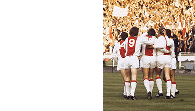
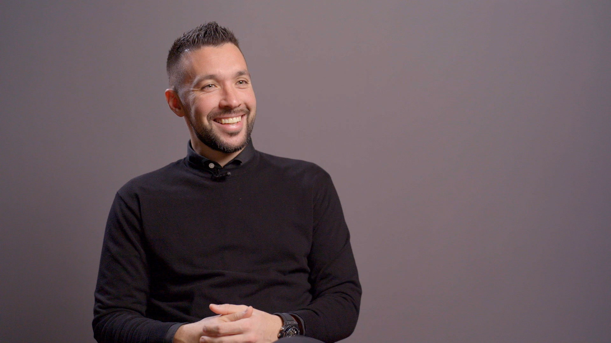
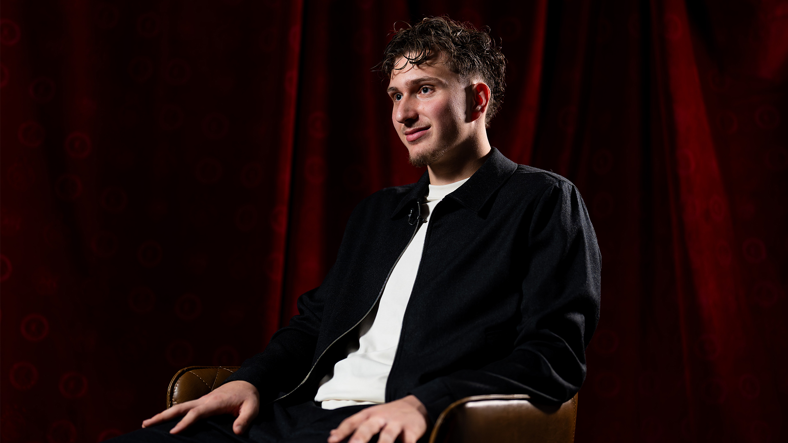
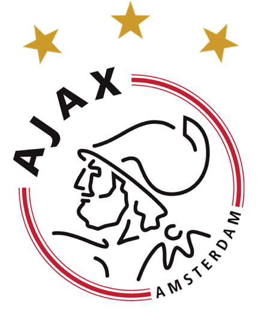
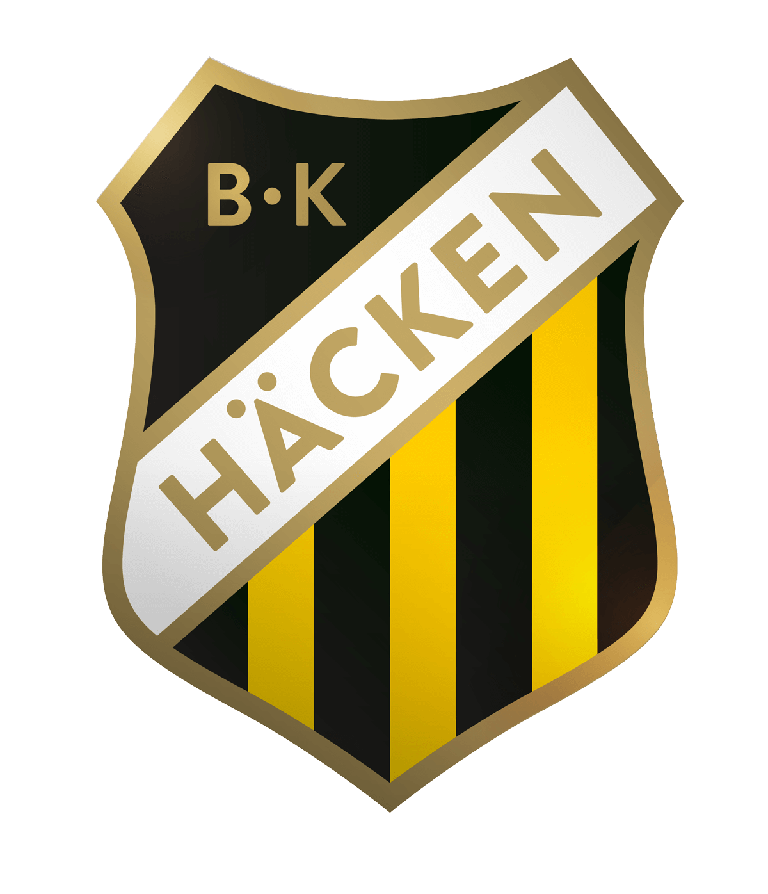

Dankzij Ajacieden
Draag bij aan de jubileumfilm
Stuur in Uitgelicht
> meer video's-
 Farioli:
Ik ben heel erg blij met het groepsgevoel
-

Ajax-reünie tijdens Gala Match:
Wat ben je nog fit!
-
 Godts:
Ik keek er écht naar uit om bij te tekenen
-
Godts:
Ik keek er écht naar uit om bij te tekenen
-
Godts:
Ik keek er écht naar uit om bij te tekenen
-
Godts:
Ik keek er écht naar uit om bij te tekenen
-
Godts:
Ik keek er écht naar uit om bij te tekenen
-
Godts:
Ik keek er écht naar uit om bij te tekenen
Borstbeelden voor Blind, Rijkaard, Tahamata en Kluivert
Daley Blind, Patrick Kluivert, Simon Tahamata en Frank Rijkaard kregen afgelopen zondag hun borstbeeld voor het eerst te zien in het supportershome. Laatstgenoemde kon er helaas niet bij zijn, maar Louis van Gaal bedankte de supporters namens hem. "Hij vindt het wel leuk hoor dat ie hier hangt."
- #Blind
- #Rijkaard
- #Tahamata
- #Kluivert
komende wedstrijden
upcoming Match
Vriendschappelijk vrouwen Datum Teams Ajax - BK Häcken
Andere ajax 1 wedstrijden
Keuken Kampioen Divisie Datum Teams Jong Ajax - Telstar